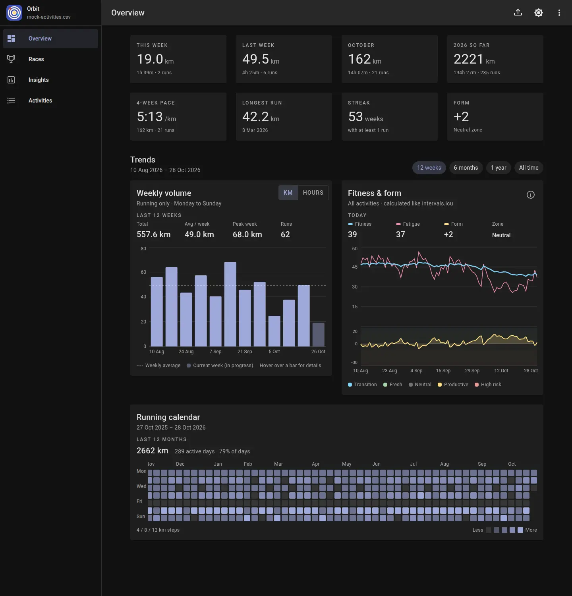

Follow the miles
Compare weekly volume in kilometers or hours. Spot a steady build, a lighter week, and the consistency behind your progress.
You put in the miles. Orbit helps you see what they add up to. Turn your intervals.icu export into a clear view of your training, progress, and potential.
No account. No uploads. Just your running.
One run at a time. It all adds up.
Illustrative training data
Your running history, connected. From this week’s mileage to the patterns that emerge over a year, see the details without losing the big picture.

Compare weekly volume in kilometers or hours. Spot a steady build, a lighter week, and the consistency behind your progress.
See fitness, fatigue, and form together. Put your training load in context as your season unfolds.
A running calendar makes your consistency visible. Zoom out from individual sessions to months of showing up.
Explore your races, recognize your progress, and get to know the habits behind your running.
Keep your race history and personal bests together. Explore estimates for 5K, 10K, and half marathon, with confidence ranges and the races behind each prediction.
Explore heart-rate zone distribution, cadence trends, fitness progression, and training patterns across your history.
Intensity, consistency, and everything between.Browse your activities and look closer at pace, heart rate, elevation, training load, and more, wherever those fields are available in your export.
No new tracking routine. No account to create. Start with the running history you already have.
Download your activities as a CSV from intervals.icu.
Go to intervals.icuOpen Orbit and choose your CSV, or drop it into the app on desktop. It’s read right on your device.
Explore your overview, races, insights, and activities. Import a fresh export whenever you want to catch up.
Your training history belongs to you. Orbit reads your CSV on your device and keeps your activities and race tags in your browser. There’s no Orbit account and no activity upload.
Browser storage is specific to this device and browser. Keep your original CSV as a backup.
A modern browser and an activities CSV exported from intervals.icu. Orbit uses the fields in your export to build your dashboard; some insights depend on data such as heart rate or training load.
Yes. Orbit is free and open source under the GNU General Public License v3.0. You can explore the code and run it yourself from the GitHub repository.
Export an updated CSV from intervals.icu, then use the upload button in Orbit to load it. Orbit works from the file you provide rather than syncing directly with your account.
Yes. Orbit adapts to desktop and mobile and supports installation as a web app. Imported data stays in the browser on the device where you loaded it.
They’re estimates based on the races you’ve recorded, with ranges and confidence indicators. Recent races at similar distances provide more useful context. They’re a way to explore your potential, rather than a promised finish time.
Bring your history. Find your perspective.